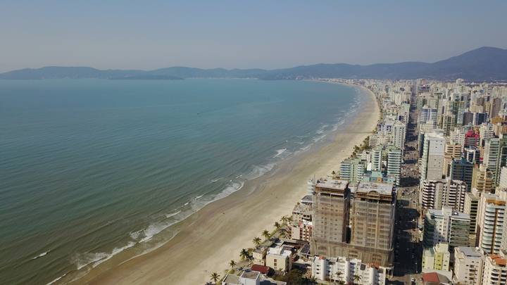
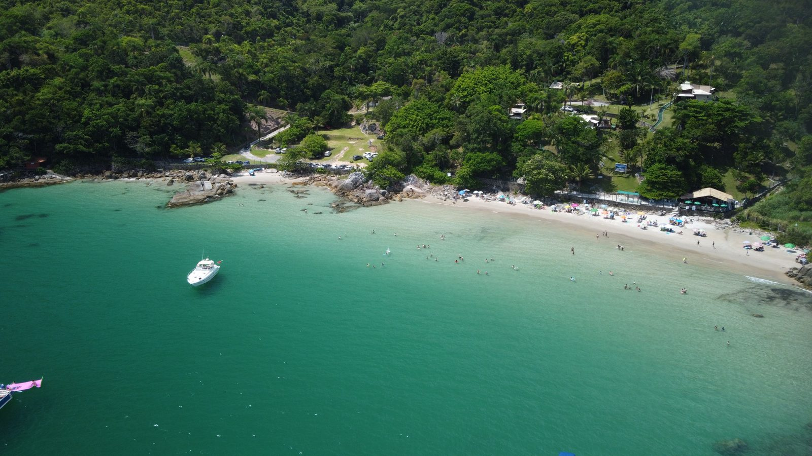
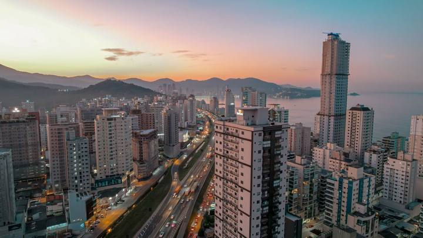

Itapema · Obras
Costa Esmeralda · Economia
Porto Belo acelera empreendimentos de alto padrão e quer deixar de ser caminho para Bombinhas
A cidade que sempre foi passagem para Bombinhas virou alvo de incorporadoras de luxo. A arrecadação multiplicou. E o alerta ambiental vem de quem olha para o que aconteceu nas vizinhas.
Em 30 segundos · Modo de Leitura, formato original Santa Informa
Porto Belo vive um ciclo acelerado de empreendimentos de alto padrão, voltados para público de alta renda nacional e estrangeiro.
Levantamento da Secretaria Municipal de Planejamento Urbano divulgado em 2024 apontou 761 novos empreendimentos autorizados entre 2020 e 2023, somando mais de 24 mil unidades.
A gestão municipal declarou a intencao de transformar a cidade em destino turístico próprio, e não apenas caminho para Bombinhas. Especialistas alertam para o risco ambiental do ritmo.
EconomiaPublicada em Atualizada em 5 de agosto de 2026, 16h50Redação Santa Informa

Entenda o assunto
Porto Belo integra a Costa Esmeralda ao lado de Itapema e Bombinhas, e fica a cerca de 66 quilômetros de Florianópolis e 25 quilômetros de Balneário Camboriú. E uma das cidades mais antigas de Santa Catarina, com colonizacao açoriana iniciada no século 18.
O ciclo imobiliário do litoral norte catarinense funciona por transbordamento. Balneário Camboriú chegou primeiro ao topo de preco. Quando o valor tornou a cidade inacessível para parte do público, o investimento migrou para Itapema. Com Itapema também no topo do ranking nacional, o movimento seguiu para Porto Belo e Itajaí.
A diferença de Porto Belo está no perfil do produto. Enquanto as vizinhas apostaram em verticalizacao intensa, boa parte dos lançamentos locais mira condomínios de alto padrão com apelo de área preservada, incluindo trechos dentro de área de proteção ambiental.
Nota de transparência. Os dados de alvarás, unidades e arrecadação citados nesta matéria foram divulgados em 2024 e se referem ao período entre 2017 e 2023. Números mais recentes dependem de nova divulgação oficial do município. Atualizaremos esta página quando houver.
Publicidade
Os números que importam
- 761 empreendimentos autorizados entre 2020 e 2023
- 12.599 unidades em prédios de até seis andares
- 11.419 apartamentos em prédios com média de 15 pavimentos
- R$ 74 milhões de arrecadação em 2017, contra projeção próxima de R$ 300 milhões declarada em 2024
- 25 quilômetros separam Porto Belo de Balneário Camboriú
Outros jeitos de ler
Modo de Leitura · formato originalO resumo de 30 segundos está no topo e a versão completa é o texto acima. Aqui ficam as três leituras da casa sobre o mesmo assunto.
Clara, a otimista
Porto Belo tem uma vantagem que Balneário e Itapema não tiveram: está vendo o filme depois de todo mundo. Dá para escolher o que copiar e o que evitar, e isso vale ouro.
Sair de setenta e quatro para perto de trezentos milhões de arrecadação em poucos anos significa dinheiro para escola, posto de saúde e saneamento. Cidade sem receita não faz nada, por melhor que seja a intencao.
E a aposta em gastronomia e serviço e a mais inteligente da lista. Turista que para para almocar deixa dinheiro na cidade. Turista que so passa deixa fila no pedagio.
Seu Prudêncio, o criterioso
Volume de licenciamento nesse ritmo exige planejamento de infraestrutura na mesma velocidade, principalmente saneamento e drenagem. O alerta técnico já está posto, e não veio de opositor: veio de quem analisou o que aconteceu com os rios das cidades vizinhas.
Também vale acompanhar a capacidade de abastecimento de água e o dimensionamento viário, dois pontos que costumam apertar antes do que se imagina em cidade litorânea de crescimento acelerado.
A boa notícia é que Porto Belo chega depois e pode aprender com o percurso das vizinhas, com o benefício de uma arrecadação bem maior do que tinha há alguns anos. Existe aqui uma chance concreta de crescer com estrutura pronta, e essa combinação é rara.
Caco, o sarcástico
Porto Belo passou a vida inteira sendo o lugar onde você pega o carro e continua até Bombinhas. Agora é a bola da vez das incorporadoras. Até a cidade mais discreta da região acabou descoberta.
Vai perder o sossego? Um pouco, sim. Vai ficar mais cara? Sem dúvida. Mas ninguém constrói vinte e quatro mil unidades em lugar que ninguém quer. O sossego de antes tinha a vantagem do silêncio e a desvantagem de não ter emprego para os filhos.
O recado, no fim, é simples: dá para crescer e continuar bonita, desde que alguém lembre de fazer o cano embaixo do chão antes de fazer a torre em cima dele.
Fontes: Secretaria Municipal de Planejamento Urbano de Porto Belo, Prefeitura de Porto Belo, Gazeta do Povo, O Antagonista e Visite Costa Esmeralda.
Espaço disponível
728 × 90 px
Meio de matéria, em toda página de notícia do portal. No celular, 320 × 100 px.
Ver tabela de preços
Leia também
Resumo Semanal Itapema · Cidade
Itapema · CidadeCâmara aprova empréstimo de até R$ 250 milhões para obras em Itapema
Leia · 5 versões de leitura
Região · EconomiaItapema e Balneário Camboriú ocupam as duas primeiras posições do metro quadrado nacional
Leia · 5 versões de leitura
Espaço disponível
300 × 250 px
Fim do texto, depois do Modo de Leitura. Mesmo tamanho no celular.
Ver tabela de preços